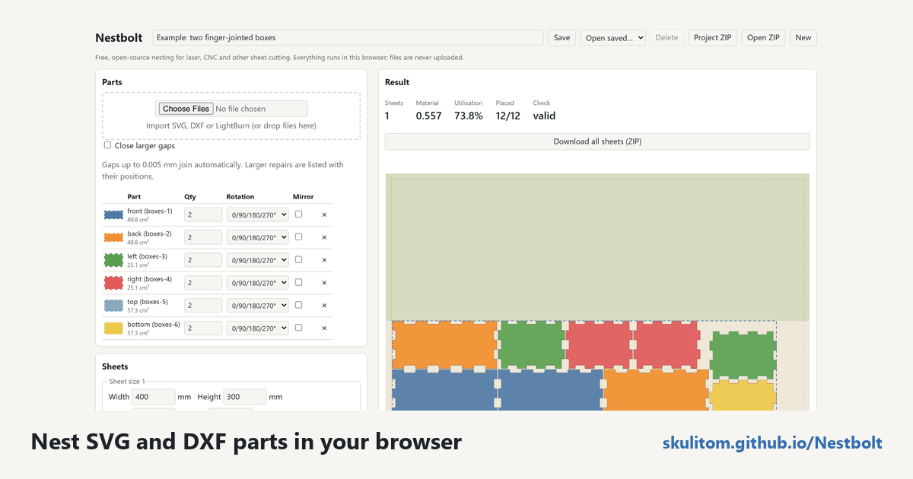

Nest SVG and DXF parts in your browser
Your drawing stays on your computer. Nestbolt's engine is compiled to WebAssembly and runs in Web Workers in your browser; files never leave the computer. You can save a project in the browser or as a ZIP, then export an SVG and a DXF for each nested sheet.
Free and MIT-licensed; your files never leave your computer.
The hosted app runs a preview build from main, newer than v0.2.0-alpha.1. LightBurn project nesting, lead-in allowances and newer large-drawing improvements are preview features. Stable v0.1.0 remains available as a download.
What the importer understands
Nestbolt imports SVG and DXF geometry including lines, arcs, ellipses, Béziers, B-splines, blocks, transforms and units, converted to millimetres. Each closed outline becomes a part; outlines inside it become its holes. Smaller parts can then be placed inside those holes during nesting.
Review the import before running the search. You can choose cutting layers, identify stock outlines and review repairs and unsupported geometry. A drawing that looks right on screen still needs the intended parts, quantities and sheet settings in the nesting request.
Gap repair is explicit and reported. The “Close larger gaps” option (--close-gaps on the command line) repairs gaps up to a chosen size and reports every repair's position and size; it is off by default. The README's example uses 0.05 mm, while the silent join limit remains 0.005 mm. The browser and MCP expose the same option. See import options and reports before choosing a repair tolerance.
Start with an SVG
- Open Nestbolt and drop in the SVG. If you want a known drawing first, choose a bundled example.
- Review parts and holes. Check the cutting layers and import messages, including any repairs or unsupported geometry.
- Set quantities and stock. Enter how many copies of each part you need, the sheet size, margins, and part and edge spacing.
- Set the allowed orientations and run. Watch the live best layout, review its clear offcut, and export the per-sheet SVG or DXF.
Start with a DXF
- Drop the DXF into the app. Review the imported drawing in millimetres, including its units, transforms and blocks.
- Choose what will be cut. Review cutting layers, stock outlines and unsupported geometry. Check that closed outlines and their holes represent the intended parts.
- Handle gaps deliberately. If you choose to repair larger gaps, set the tolerance explicitly and review the reported repairs.
- Set the job and nest it. Use the quantities, sheet, spacing and rotation settings below, then review the layout and export each sheet.
The settings that matter
Start with your stock dimensions and margins. Nestbolt can use several sheets and stock sizes with limits, as well as defects and remnant outlines. Part spacing and edge spacing are separate settings; keep both visible in your review instead of treating the sheet size as the whole request.
- Rotations: choose free rotation, stepped angles or a list. The sewing example uses 0° and 180° for fabric grain.
- Mirroring: decide whether it is permitted for the parts you are nesting.
- Quantities: check the requested copies of each part before comparing layouts.
- Time: choose the search budget and watch the best layout found so far.
The optional Quick initial layout setting under Advanced is part of the preview's newer large-job workflow. It is off by default and tries a conservative initial arrangement before improving it; it may use more material. Original geometry, spacing, stock limits and rotation permissions still apply. Unsupported stock or angle rules use the ordinary constructor.

main (c9b0176) on 2026-10-20 after the boxes example: parts, quantities and rotations on the left; the result on the right, with a dashed box around the parts and the clear offcut shaded above them.Read the result, then export
The app draws the best layout while the search runs. Each sheet shows the box around its parts and the clear offcut above them. Nestbolt compresses the last sheet towards one end so the offcut stays usable.
An independent Clipper2 validator checks overlap, spacing, containment, rotations and quantities; invalid layouts are never returned. Exports preserve the original curves by transforming them rather than re-polygonising them. Review the files in your cutting workflow: Nestbolt gives no machine-safety or fit certification.
LightBurn projects: preview
Preview support imports .lbrn2 and legacy .lbrn, nests groups as rigid units and exports editable .lbrn2 per sheet, preserving artwork, text, images and layer settings. Tool and output-disabled shapes stay fixed. Older text may need a native save to embed outlines; mixed active/fixed groups need regrouping. Read the preparation notes. Preview lead allowances produce review guides; the cutting program creates the actual leads. Imported LightBurn projects keep editable contents and receive separate SVG/DXF cutting files.
When to use the native tools
To script runs, or to reproduce a run exactly with a repeatable work budget, use the native command-line tools in the README Quick start. Downloads are available for Windows x64, Linux x64 and macOS Apple silicon. Repeatable work budgets are available when you need to reproduce a run with the same build, inputs, budget and seed; a reached real-time limit is reported explicitly.
For AI agents, the MCP server interface covers importing, nesting, validation, export and sheet estimates. For a first manual job, stay with the browser and choose the example closest to your drawing.